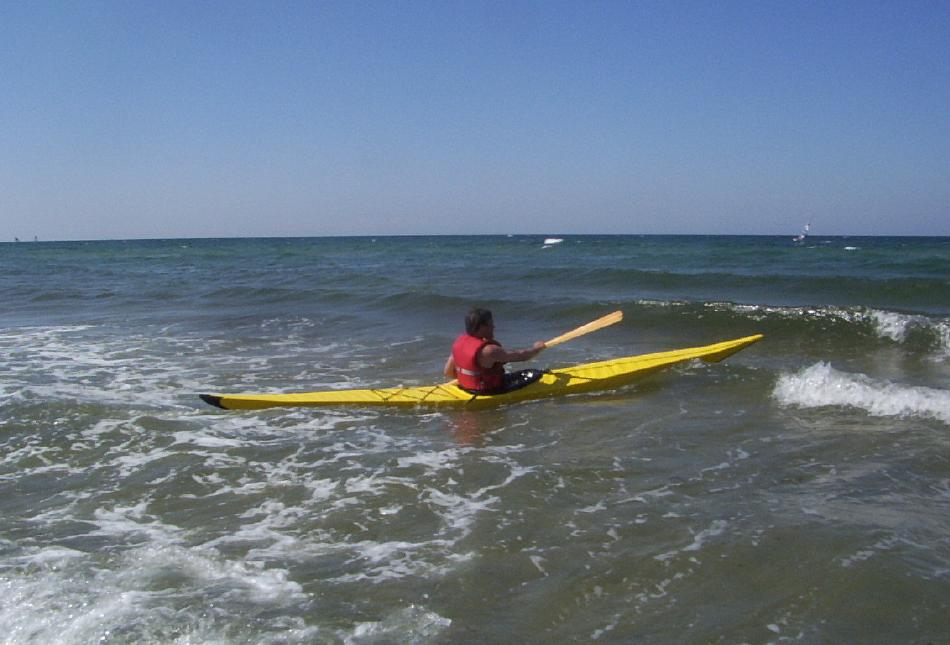

| Sea Ranger LC by Karsten Bruun (CA) | Menu Last Page Next Page |
|

Karsten, who lives in Victoria, British Columbia, is seen paddling his Sea Ranger LC folder along the coast north of Sealand (Sjaelland), Denmark while on holiday. He paddled over 100km in the Sea Ranger during his 2 weeks stay in Denmark. Karsten reports that the Sea Ranger..." has a nice balance of tracking and turning, and that it rolls nicely." Use the {Back} key to return.
|
|